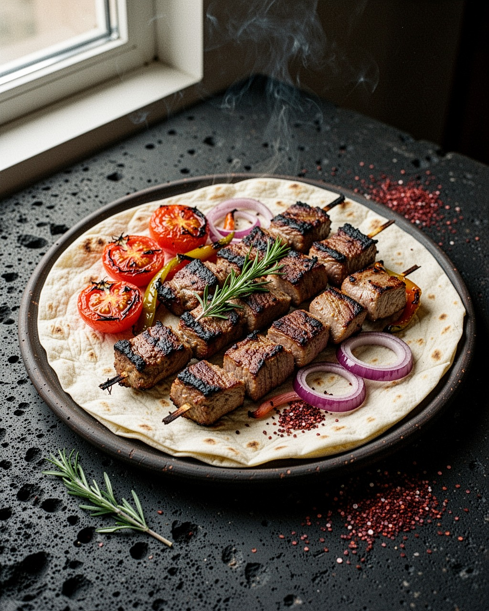
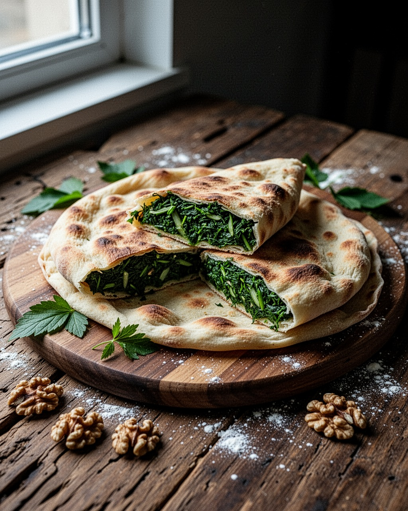
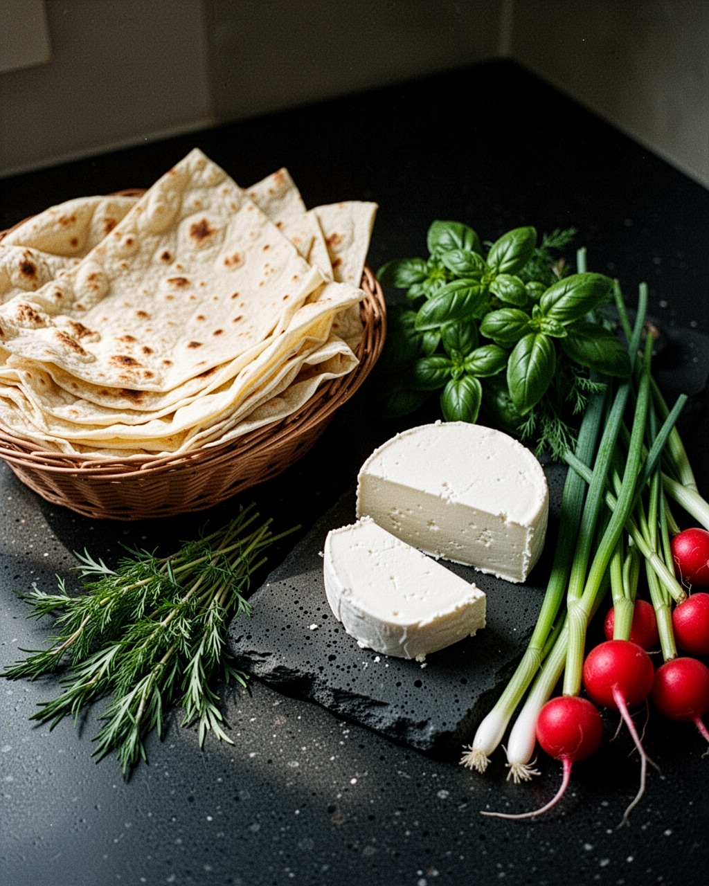
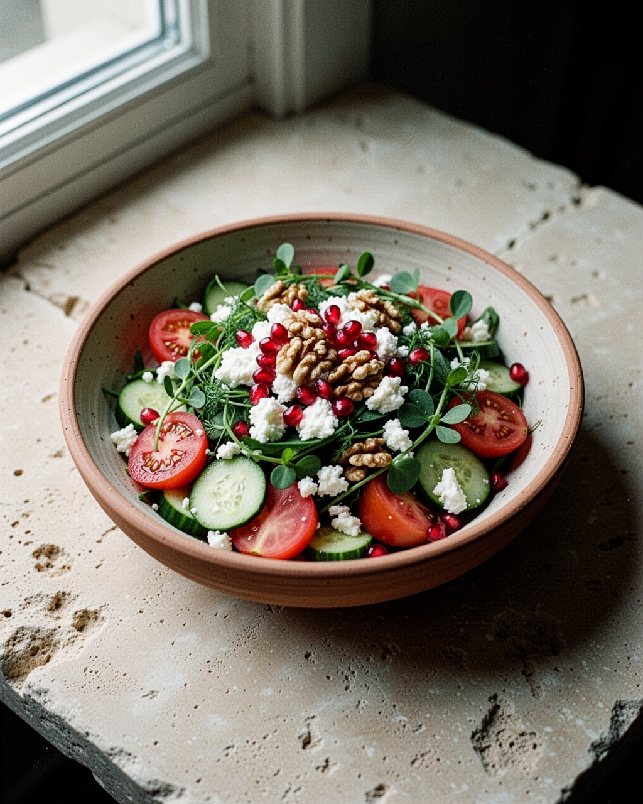
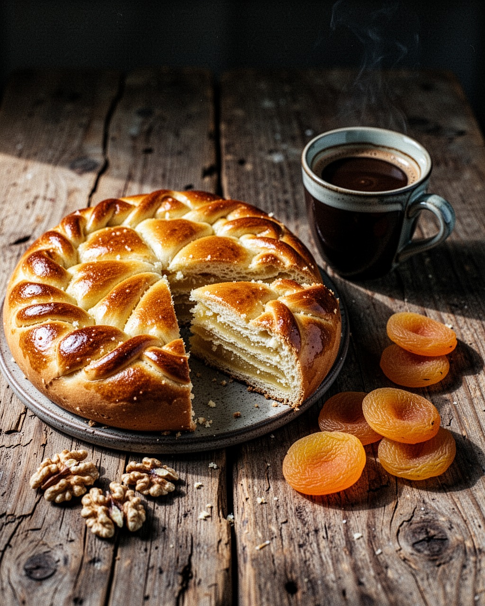

Khorovats9 800 AMD
Lamb and pork over apricot wood, blistered tomato and pepper, served on lavash.
Fifteen dishes, most of them cooked in or over the tonir. Spin the ring, or jump to a section.

Lamb and pork over apricot wood, blistered tomato and pepper, served on lavash.

Whole trout baked in the tonir with tarragon butter and lemon.

Thin flatbread folded over a dozen chopped herbs.
Vegetarian
Lavash from this morning, chanakh cheese, basil, tarragon, radish.
Vegetarian
Whole pumpkin baked with rice, dried apricots, walnuts and honey. For two.
VegetarianHalf a chicken marinated in matsun and sumac.

Grape leaves rolled around beef, rice and herbs, with garlic matsun.

Tomato, cucumber, purslane, white cheese, walnuts, pomegranate.
VegetarianCharred in the embers, with walnut and garlic.
VegetarianAir-dried beef and spiced sausage, sliced thin.

Round butter pastry, baked each afternoon. Served warm.
VegetarianDried Ararat valley apricots, walnuts, matsun cream.
Vegetarian
Red wine from Vayots Dzor, poured from a clay jug.
Brewed in a jazzve over the embers.
Made here, not too sweet.